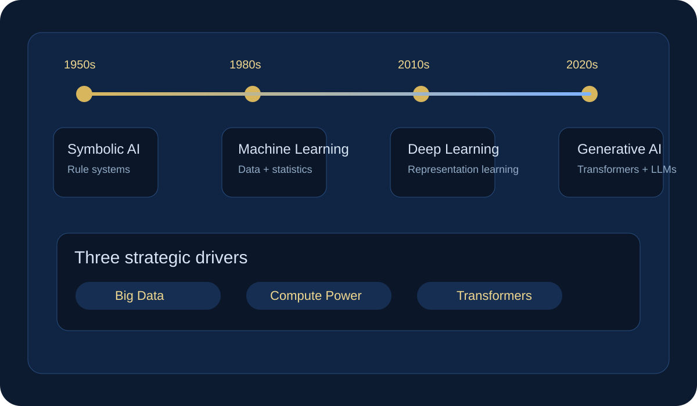

The Evolution of AI: A Strategic Timeline Study
This artifact was redesigned to solve the main portfolio issue from previous feedback: the timeline is now visible immediately on the page. Instead of asking viewers to download a file first, the page leads with the visual story.

Symbolic AI
Early systems relied on logic, handcrafted rules, and explicit reasoning, which made them interpretable but limited in scale and flexibility.
Machine Learning
Statistical methods improved pattern recognition by learning from data, enabling stronger performance on structured tasks.
Deep Learning
Neural networks became practical at scale as larger datasets and stronger compute made representation learning viable.
Generative AI
Transformers and large language models shifted AI from narrow prediction toward flexible generation and interactive reasoning.
This artifact demonstrates that I can explain technical evolution as a strategic narrative, not just a technical list of milestones.
For this portfolio artifact, I selected a timeline-based study of AI evolution because it demonstrates a different capability from my implementation-focused work. Rather than building a tool, this project shows my ability to synthesize historical, technical, and industry trends into a clear strategic framework. I revised the artifact to be more visual and easier to scan so it better fits a professional portfolio audience. This change makes the work more effective for instructors, recruiters, and non-technical stakeholders who need to understand the progression of AI quickly. Overall, the artifact strengthens my portfolio by showing that I can communicate not only how AI systems work, but also how and why major shifts in AI development occur.